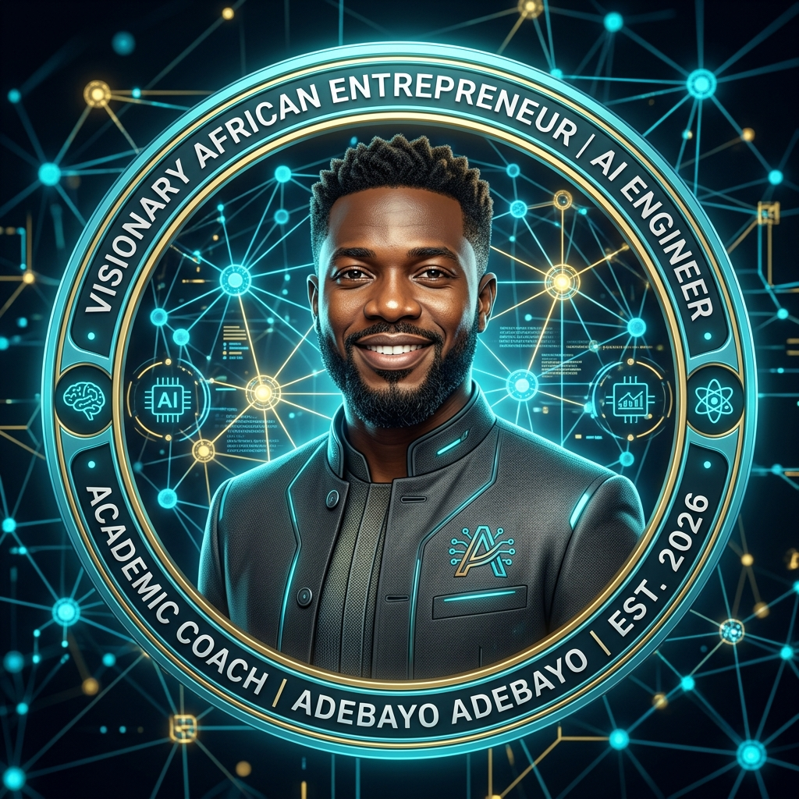

Ingénieur IA, Master Praticien PNL, Cofondateur de StuFlow.app, Coach Académique & Réalisateur.
Ingénieur en informatique issu de l'Université Libre de Bruxelles (ULB Polytech), je suis également certifié Maître-Praticien en PNL Systémique et Générative à la Spiral Academy (formation signée par Robert Dilts, NLPU).
J'ai créé **StuFlow.app** pour mes propres coachés : un outil digital d'apprentissage actif qui transforme les bonnes intentions en routines et résultats probants.
En parallèle, j'explore le storytelling humain et la mémoire collective à travers le cinéma, ayant réalisé le film documentaire "Ce bout de tissu" avec le Centre Vidéo de Bruxelles (CVB).
